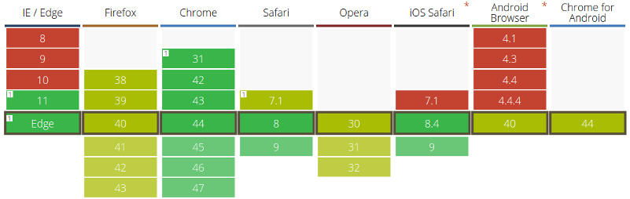

Идея для данной статьи родилась после нескольких мучительных недель изучения WebGL. На личном примере, выяснилось, что люди не сталкивающиеся до этого с 3d-графикой, имеют в основном ошибочные представления о работе данной технологии.
В интернете полно разрозненной информации о WebGL, но нет более-менее полного и подробного её описания. Это либо коротенькие статьи, рассказывающие как нарисовать треугольник, либо статьи перепрыгивающие сразу на библиотеку three.js, либо цикл уроков, который, кажется, вобрал в себя какие только возможно анти-паттерны javascript.
WebGL в противоположность Javascript имеет большой порог вхождения. Этой статьёй хочется дать начальное представление о технологии и показать куда двигаться дальше.
Так что же такое WebGL? Это OpenGL ES 2.0 в браузере, где ES - это специальная версия OpenGL для работы на мобильных устройствах. Они не полностью идентичны, но имеют одинаковую структуру, методы и типы данных. Если вы хорошо освоите одну технологию, вы автоматически будете разбираться в другой.
Спецификаия WebGL была выпущена в 2011 году, разрабатывается и поддерживается Kronos Group. Недавно стало известно о черновом варианте WebGL 2.0. Примечательно, что сайт Kronos Group последнии дни практически перманентно лежит, чем сильно затрудняет изучение. Для работы WebGL использует контекст элемента canvas.
Если вы думаете, что WebGL рисует 3D, вы ошибаетесь. WebGL ничего не знает о 3D, ведь это скорее низкоуровневый 2D API, и всё что он умеет делать - рисовать треугольники. Но он не просто их умеет рисовать, он может рисовать их чертовски много и чертовски быстро.
Хотите нарисовать квадрат? Пожалуйста, соедините два треугольника.
Нужна линия? Без проблем, всего лишь несколько последовательно соединенных треугольников.